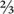

Dilute calcium dihydrogen phosphate [0.01 M Ca(H2PO4)2 at pH 4.0] and activated charcoal are used to extract water-soluble and adsorbed SO42– from the air-dry soil matrix, thereby providing an empirical assessment of ‘available’ soil S (CPC-S). This extracting solution, developed by Peverill and Briner (1974), and Peverill (1976) and incorporating a 1:4 soil/solution ratio and an extraction time of 1 h, originally used the distillation method of Johnson and Nishita (1952) for its analytical finish. Nowadays, however, ICPAES is preferred. Activated charcoal is included during soil extraction, as the method’s developers reported its inclusion removed organic S fractions, thus improving the correlation between test results and the response of southern Australian pastures to applications of S fertiliser.
The method, which has most use in Victoria, is similar to Method 10B3 of Rayment and Higginson (1992) and Method 10B3 in this chapter. Lower values of phosphate-extractable S must be expected, however, because of the removal of at least some organic S, and as a consequence of the narrower soil/solution ratio (1:4 cf 1:5) and the shorter extraction time (1 h cf 17 h). It is essential to ensure the activated charcoal is sufficiently free of S to prevent any measurable transfer to the extracting solution.
Analysts should achieve a within-laboratory detection limit of 1 mg S/kg, based on 3 times the standard deviation of 10 determinations of process blanks. The reporting range is from 3 to 200 mg S/kg, with higher values reported as >200 mg S/kg for routine soil testing purposes. The soil/extractant ratio of 1:4 must be maintained, should a lower soil weight than specified become necessary because of a limited supply of sample. The sample blank must be subtracted before reporting, as residual S contamination of the activated charcoal may vary from batch to batch.
Deionised water
This should be at least 18 MΩ.
Extracting Solution – 0.01 M Ca(H2PO4)2 at pH 4.0
As for Method 10B1.
Activated charcoal
Source LR grade from Rhone-Poulenc (or the equivalent) then remove as much S as possible as follows:
(1) Half fill a 2.0 L wide neck screw top bottle
with dry, unwashed charcoal.
(2) Thoroughly wet-up the charcoal with 0.01 M Ca(H2PO4)2 at pH 4.0 Extracting Solution, then fill to around  volume with more 0.01 M Ca(H2PO4)2.
(3) Seal the bottle and shake vigorously for around 1 h.
(4) Filter the mixture under vacuum through a Whatman No. 541 paper, sucking the charcoal ‘dry’.
(5) Return the damp charcoal to the bottle and repeat steps (2) to (4) after substituting 0.01 M Ca(H2PO4)2 with deionised water.
(6) Repeat step (5) a further 2–5 times using deionised water to remove all traces of Ca(H2PO4)2.
(7) Transfer the damp charcoal to large evaporating basins and dry overnight at 100–105°C.
(8) After oven drying, remove the charcoal, break up any lumps, then return it to the oven for at least a further hour at 100–105°C.
(9) Remove from the oven and seal the evaporating basin(s) containing the treated charcoal with inert plastic wrap while still hot.
(10) If condensation forms on the under side of the plastic wrap, the charcoal is not dry. In that circumstance, remove the plastic wrap and return the evaporating basin(s) containing the treated charcoal to the oven for further drying.
(11) If condensation does not form on the under side of the plastic wrap, continue to cool the charcoal while it is still sealed.
(12) When cool, transfer the charcoal to a suitable storage container. It is convenient to prepare several kilograms of charcoal at a time: see Note 1.
Sulfate Primary Standard
1 mL contains 1 mg of S.
Prepare as for Method 10B1.
Sulfate Secondary Standard
1 mL contains 200 μg of S.
Take 200 mL of SO4-S Primary Standard from Method 10B1 and dilute to 1.0 L with 0.01 M Ca(H2PO4)2 at pH 4.0 Extracting Solution. Prepare on the day of use.
Prepare by adding 0, 1.25, 2.5, 5.0, 10.0, … 75.0, 100.0 and 125.0 mL of freshly prepared SO4-S Secondary Standard to separate 500 mL volumetric flasks: use a micro-burette for volumes <10 mL. When diluted to 500 mL with 0.01 M Ca(H2PO4)2 at pH 4.0 Extracting Solution these working standards contain 0, 0.5, 1.0, 2.0, 4.0, … 30.0, 40.0 and 50.0 mg S/L. Equivalent soil strengths for a 1:4 soil/solution ratio are 0, 2.0, 4.0, 8.0, 16.0 …120, 160, and 200 mg S/kg, respectively.
Place about 1 g of activated charcoal into each 50 mL extraction bottle or centrifuge tube (scoop accuracy is sufficient). Into this quantitatively add 7.5 (± 0.01) g of air-dry soil (<2 mm particle size), then dispense 30 mL of 0.01 M Ca(H2PO4)2 at pH 4.0 Extracting Solution, and cap/stopper. Next swirl or shake the bottle/tube to ensure the soil and charcoal are thoroughly wet and dispersed, then mechanically shake for 1.0 h end-over-end (preferred) or on a horizontal reciprocating shaker operating at ≈200 cycles/min.
Following extraction, quickly filter (Whatman No. 40 paper) or centrifuge: the resulting soil extracts should be clear to view. If any particulate matter passes through the filter/centrifuge, a syringe and a 0.20 μm filter can be used to refilter the extract but this is not usually necessary.
Analyse these extracts and an appropriate range of Sulfate Working Standards-CPC by ICPAES as for Method 10B3, noting the soil/solution ratio is 1:4.
Report CPC-S (mg S/kg) on an air-dry basis.
1. An alternative for testing the dryness of the charcoal is to use a clean dry stainless steel spatula. Slice through the charcoal with the spatula. If the charcoal is dry, the spatula will come out clean. If not, a coating of charcoal will adhere to the spatula. Re-dry if this occurs.